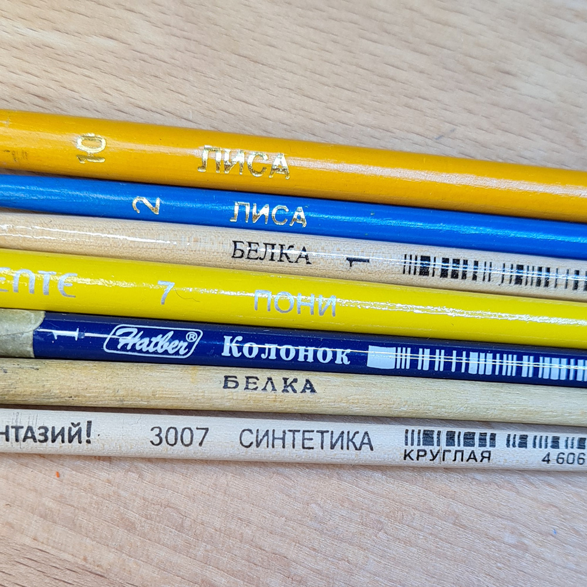
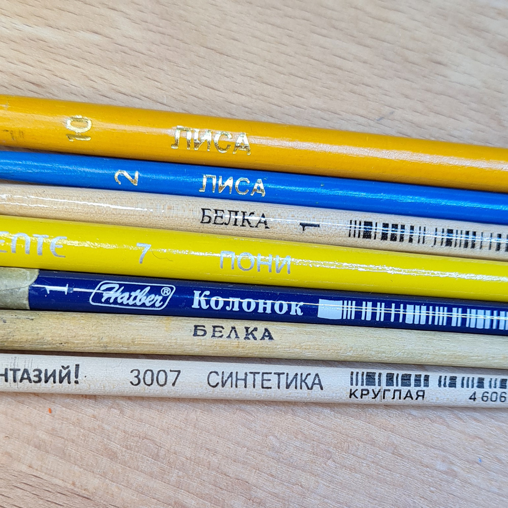

Инструмент — настоящее орудие, которое воздействуя на предмет изменяет его внешний вид и/или свойства.
Правильно подобранный инструмент — это половина успеха в работе. Кроме того, инструмент всегда должен быть в рабочем состоянии: острые лезвие, отсутствие загрязнения рабочих поверхностей, целая изоляция, свободная подвижность деталей или же отсутствие таковой (что предусмотрено конструкцией), рабочие фиксирующие механизмы, целый электропровод и т.д. Немаловажным пунктом является соблюдение условий хранения.
Любой инструмент обладает целевыми свойствами. Но не у всех инструментов можно восстановить их. Например: затупившиеся ножницы можно заточить, а вот наждачка одноразовый инструмент.
Особое внимание стоит уделить выбору сложных электрических инструментов. Изучение отзывов пользователей весьма полезно в таком деле. А еще уделить внимание комплектации, гарантийному сроку и сроку службы.


Ножницы
Ножницы самый распространенный и обычный инструмент в каждом доме.
По по назначению они делятся на множество видов и используются во всех сферах нашей жизни: домашний быт, кухня, медицина, торговля, салоны красоты, ремонтные мастерские (швейные, обувные, автомобильные), школа, офис, промышленные производства и многие другие. Даже спасатели имеют свои вид ножниц — гидравлические.
Внешний вид, форма колец, форма лезвий, ширина, угол заточки и способ их соединения, материал изготовления, размер, цвет, декор и даже для какой руки — вот по таким показателям можно выбрать себе этот инструмент.
В доме всегда есть ОДНИ ножницы для всего — это и ногти постричь, и челку подстричь, и бумагу или ткань нарезать, и проволочку отрезать, и шурупчик закрутить, а еще у новогодней ёлки веточки подрезать. И как правило они всегда лежат в одном определенном месте.
Я же стараюсь использовать разные инструменты для разных материалов. Бумагу, картон и грубую или плотную ткань режу одними ножницами, ленты и тонкие нежные ткани другими, наждачную бумагу оказывается хорошо режут старые ножницы, которые хотела выбросить, для канители отлично подошли маникурные ножнички с тонкими концами.


Иглы
Существует три основных вида игл по назначению - швейные, медицинские и технические. Кстати игла в музыкальных проигрывателях называется звукоснимающая и относится к техническим.
Иглы для ручного шитья. Если вы не имеете профессионального отношения к шитью, то при покупке вряд ли обращаете внимание на маркировку иголок. Она значительно облегчает выбор и дальнейшую работу. Как и для швейной машинки, ручные делятся по размеру и назначению. Стараюсь приобретать наборы в которых есть иглы минимум для трех видов работ.
Иглы бисерные. Самое важное в них - ушко не шире тела иголки. Что бы сделать браслет из бисера в технике ткачества мне требуется две иголки минимум, так как легко гнуться и ломаются.
Иглы для швейной машины. Здесь, казалось бы все понятно, от No 60/70 и до No 200. Чем больше цифра, тем толще игла. Когда у меня появилась машинка, я узнала, что иглы для тканей различаются не только по толщине, но и по форме острия, и что есть иглы для кожи натуральной и искусственной, брезента, вязаных материалов, вышивальные, для декоративных строчек и т. д.
Правильно подобранная для работы игла — это в первую очередь аккуратная и красивая строчка, и несомненно удовольствие от процесса.
Правильное использование и хранение игл для шиться гарантирует долгое сохранение целевых свойств — целостность покрытия, отсутствие деформации тела иглы, ушка и острия.


Кисти
Кисточка — инструмент с закрепленным на рукояти пучком ровных волосков или щетинок.
Художественные кисти. Их делают из синтетических и натуральных материалов. Натуральные кисти производят из щетина кабана, хвостовых волосков белки, хорька, соболя, куницы, колонка, барсука, лисы, выдры и др. Есть даже из шерсти тюленя.
Материал, форма и толщина кисти зависит от того для какой техники она будет применяться. Процесс изготовления кисточек многоэтапный и довольно сложный. Поэтому цена в магазине может очень удивить.
Кисточку можно назвать многофункциональным инструментом: для рисования, для нанесения клея и лака, для удаления загрязнения, мелкого мусора или пыли. Ими работают реставраторы — снимают загрязнения или старый клей не повреждая старинный предмет, страницы старинных книг или художественное полотно.
У меня около пятидесяти кистей разного размера и из разного материала. Есть такие, где остался от ворсинок лишь небольшой "ёжик". Когда я рисовала на футболках акрилом, то выяснила, что их много не бывает. И чтобы не тратить время и деньги на поиски какой-нибудь эдакой, я кисти стригу или выщипываю с тем учетом, что они понадобятся не один раз.
 
